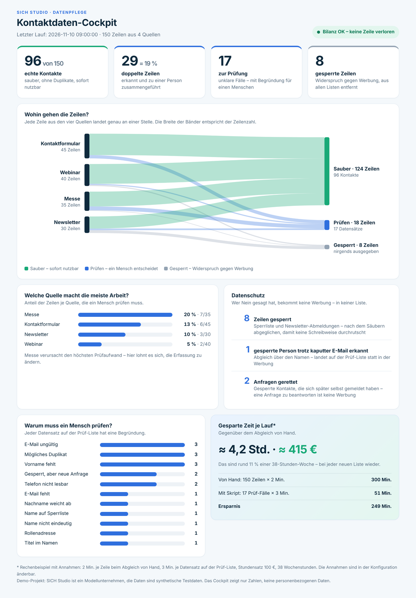

Contact list cleanup
One click in Google Sheets turns 150 rows from four sources into 96 clean contacts, a review list with reasons and a cockpit for management.
- My role
- Scope, functional concept, decisions on the rules, acceptance testing in Google Sheets, content of the cockpit.
- Tools
- Google Apps Script, Google Sheets, web app with HTML, automated tests in Node, Claude
- Status
- Demo project, version 1.5. SICH Studio is a model company; all data is synthetic. Code and documentation are public on GitHub, the cockpit runs as a live web app (in German).
Starting point
The model company SICH Studio, a consultancy, collects contacts in four ways: through the contact form on its website, webinar registrations, business cards from a trade fair typed in by hand, and the newsletter. Each list is kept by a different person or tool.
- The same person appears several times. Once as
J.NEUMANN@…, once with a space, once with an invisible character from copy & paste. - Every source has its own errors. Names in one cell, phone numbers in six spellings, dates as text, as dates or as Excel numbers.
- Some people have objected to marketing. They are on a block list and must not be contacted again through any of the four lists.
- Nobody knows how many real contacts there are. 150 rows are not 150 people.
Approach
The starting point was a task from my training course: clean 18 rows with n8n. I rebuilt the idea in Apps Script with my own data, stricter rules and a view for management.
- Functional concept before code. Target schema, source priority and the split “the machine cleans, a person decides” were fixed before a single line of code existed. Plus 23 deliberate special cases with expected results.
- My own test data. 150 synthetic rows from four sources, generated reproducibly. All addresses end in
.example, so no mail ever reaches a real person. - Acceptance in the real spreadsheet. I ran every version in Google Sheets and compared the log with the tests. The first run failed because of the time zone of an imported spreadsheet. The simulation had not covered this case.
- Code review on request. I asked for a critical review of the finished script. It found ten defects outside the test data, including the missing block list and the spelling
+49 030 …. All are fixed and covered by tests. - Two decisions on the rules. If a blocked person later sends an enquiry through the form, the enquiry goes to the review list instead of disappearing. If two people share one e-mail address, both are kept.
- Extended after the next course module. I compared the module “Die saubere Liste” (the clean list) with the project and chose three improvements for version 1.5: review decisions are kept between runs, a tab recalculates the result with formulas, and the cell that triggered a review is highlighted. I deliberately did not adopt the fuzzy name matching from the course. I installed and tested version 1.5 in the spreadsheet myself.
Solution
The spreadsheet menu has an item “Kontaktlisten bereinigen” (clean contact lists). The script reads the four sources without changing them and writes three tabs: Sauber (clean), Prüfen (review) and Protokoll (log).
- Mapping as configuration: which column of which source goes where is defined in a separate file. A new source is a new entry; the code stays unchanged.
- Cleaning: remove invisible characters, lower-case e-mails, split names from one cell, bring phone numbers to
+49…, standardise dates. - Merging: rows with the same e-mail become one person. The script fills gaps from the other sources; the more reliable source wins.
- Review list with reasons: whatever the machine cannot decide safely gets a reason in plain language, for example “Nachname weicht ab (Krüger / Neumann)” (surname differs).
- Balance: every run checks that the rows read and the result add up. If a row is lost, the log says “FEHLER” (error).
- Decisions are kept: in Prüfen a person records what happened to the case (done, in progress, fix the source, discard) plus a note. This stays in place on the next run. Cases that no longer exist move to an archive.
- Cross-check without the script: the tab Kontrolle recounts the result with spreadsheet formulas, independently of the script, and shows “OK” or “ABWEICHUNG” (deviation).
- Problem cell highlighted: in Prüfen the cell that triggered the review reason is highlighted.

Details
Four places where a simple approach gives a result that looks tidy but is wrong.
| +49 (0)30 … | The usual short formula turns this into +49030…. The number looks clean and cannot be reached. The script removes the zero and checks the length. |
|---|---|
| Google Sheets reinterprets values | In a normal cell +4930… becomes a number without the plus, and 2026-09-15 becomes a date. The script first sets the format “Text” and then writes the values. |
| Clean first, then block | Compared raw, MARKUS…@ slips past markus…@ on the block list. |
| Missing block list | Without a block list the run stops. Otherwise every blocked person would land in the clean list, and the balance would still say “OK”. |
Why merge first, then review? The tool reviews records, not rows. A missing first name in one source is often filled from another, and some conflicts, such as different surnames or two people behind one address, only show once the rows of one person are grouped. Rows without a valid e-mail are never merged, so they cannot disappear as duplicates.
Rules in code
Seven rules as they appear in the script. Variable names are simplified for reading; the full code is on GitHub.
Remove invisible characters
text.replace(/[\u00AD\u200B-\u200F\u2060\uFEFF]/g, '') // zero-width space, soft hyphen
.replace(/[\u00A0\u2007\u202F]/g, ' ') // non-breaking spaces
.replace(/\s+/g, ' ')
.trim()You cannot see these characters; they come from copy & paste. Without this line two identical e-mail addresses count as different.
Check the e-mail
/^[a-z0-9._%+-]+@[a-z0-9-]+(\.[a-z0-9-]+)*\.[a-z]{2,}$/.test(email)“Contains an @” is not enough. The rule also requires a domain with an ending; otherwise the row goes to the review list.
Phone: short formula and script
// The usual short formula, here as an n8n expression. “+49 (0)30 …” becomes a wrong “+49030…”.
{{ $json.telefon.replace(/[^0-9+]/g, '').replace(/^00/, '+').replace(/^0/, '+49') }}
// In the script (shortened)
var t = text.replace(/\(0\)/g, '').replace(/[^0-9+]/g, ''); // remove “(0)” first
if (nummer.indexOf('490') === 0) nummer = '49' + nummer.slice(3); // „+49 030 …“ → „+4930…“
if (nummer.length < 10 || nummer.length > 15) { /* → review: “Telefon nicht lesbar” (phone unreadable) */ }The short formula makes a number look tidy. The script also checks whether the result can be a phone number at all.
Compare without changing
text.toLowerCase()
.replace(/ä/g, 'ae').replace(/ö/g, 'oe').replace(/ü/g, 'ue').replace(/ß/g, 'ss')
.normalize('NFD').replace(/[\u0300-\u036f]/g, '') // é → e“Möller” and “Moeller” become equal for the comparison. The name is stored the way the most reliable source spells it.
Read an Excel number as a date
new Date(Date.UTC(1899, 11, 30) + Math.floor(wert) * 86400000) // 46280 → 2026-09-15In old exports a date is often a number: the days since 30 Dec 1899.
Text format first, then the values
bereich.setNumberFormat('@'); // format “Text”
bereich.setValues(daten);In the opposite order Google Sheets turns “+4930…” into a number without the plus.
Balance
bilanzOk = gelesen === sauberZeilen + pruefenZeilen + gesperrt;One line of code that shows after every run whether anything was lost.
Privacy
| Blocked rows | They are removed from all sources and written to no tab. The log shows only their number. |
|---|---|
| Minimal permissions | The script may access only this one spreadsheet, not all files in Drive. |
| Cockpit without personal data | The web app reads stored key figures and never accesses the spreadsheet. The link can be shared. |
| Protection against formulas | A value from a public form that starts with “=” is written as text and never executed as a formula. |
Result
- 150 rows become 96 clean contacts. 29 duplicate rows are merged, almost one in five.
- 17 records go to a person with a reason; 8 blocked rows appear nowhere.
- The trade fair list causes the most review work: 20 percent of its rows. The cockpit shows where a different way of capturing data would pay off.
- 128 automated checks and a smoke test run locally, without a Google account. The run in the real spreadsheet gives the same numbers, and the tab Kontrolle confirms them with formulas.
SICH Studio is a model company; all data is synthetic test data. The time saved in the cockpit is a worked example with openly stated assumptions: 2 minutes per row by hand, 3 minutes per review case, an hourly rate of 100 €.